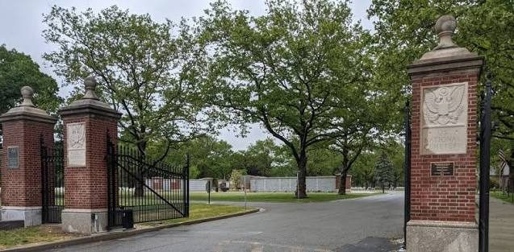
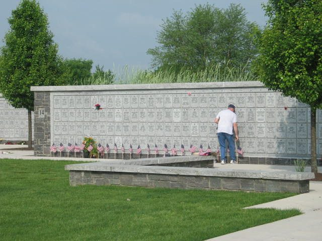
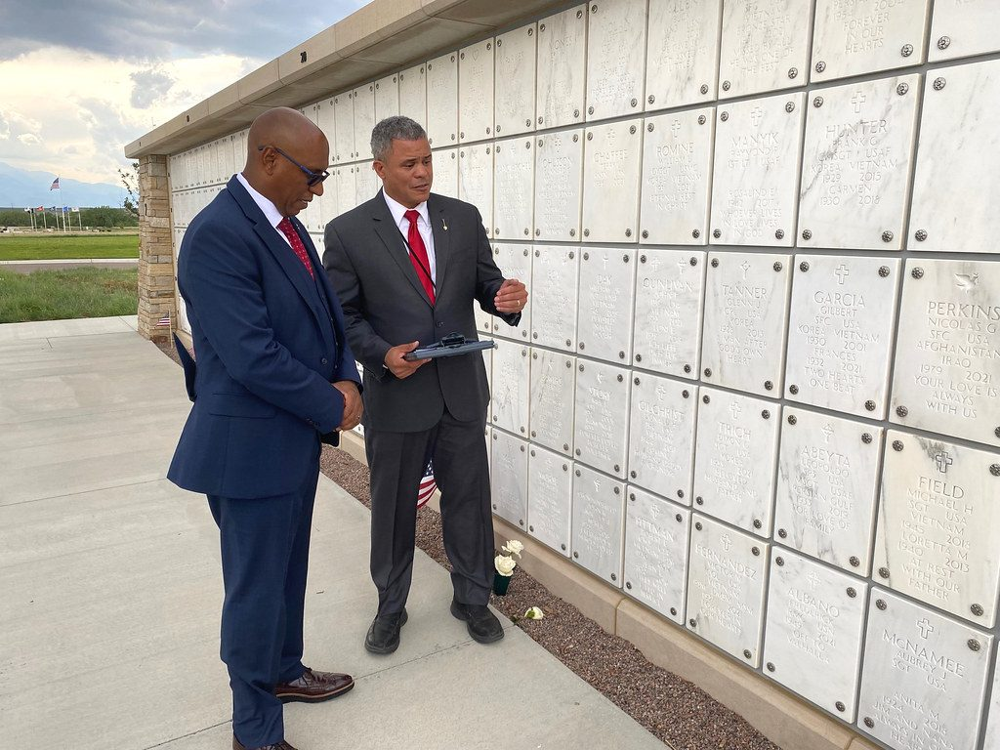

What got built
The centerpiece is a columbarium of 13 structures holding 6,240 niches, with foundations, masonry, subsurface drainage, a walking and sitting plaza, parking areas, irrigation and landscaping. A columbarium looks simple from the path. Underneath it is a drainage and foundation design that has to keep a masonry structure stable and dry for generations.
That is why the geotechnical investigation came first. Its findings set the foundation and drainage design, rather than the other way around.
The site work around it
The scope reached well past the columbarium itself. It replaced about 16,000 feet of perimeter fence, added a 200 foot deceleration lane, new sidewalk and guardrail, and relocated the main gate, including all ten of its large brick columns.
A historic fence, replicated
The ornamental iron fence along the main road and the southern boundary is historic, so it could not simply be swapped for something off the shelf. We replicated it to satisfy the State Historic Preservation Office. About 4,000 feet of chain link was replaced with aluminum ornamental fence, and the rest with black vinyl chain link.
Why design-build
As design-build prime, Alares carried the project from start to finish: surveying, geotechnical, architecture, civil, plumbing, irrigation, structural and landscape architecture, then construction administration. We submitted the initial investigation and the 35, 50, 95 percent and final design documents, then stayed through construction with inspections and reviews of RFIs, submittals and shop drawings to confirm the installed work matched the documents and the VA's requirements.
Aqua Engineering handled irrigation and The LA Group handled landscape architecture. Don Maggioli was project manager, with Mike Bundy as assistant project manager.
Built for the next phase
The Phase 1 site infrastructure was designed to accommodate future columbarium expansion, so when the cemetery needs more space, the utilities, drainage and circulation are already laid out for it. Designing the first phase with the second in mind is far cheaper than retrofitting later.


